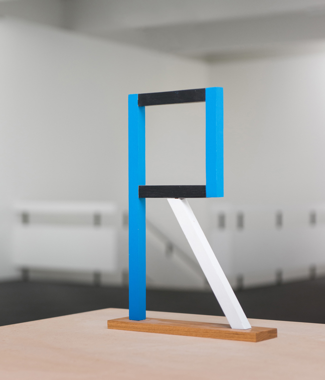
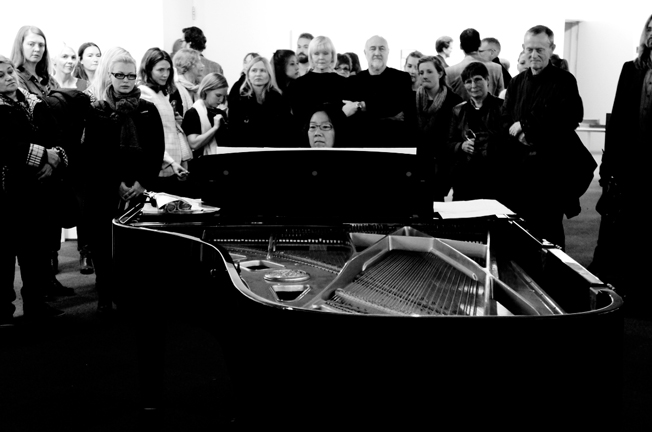

Milk, Language, Metaphysics and Death, 2010. Dimensions Variable.
Milk, Language, Metaphysics and Death, 2010. Dimensions Variable.
Kevin Boothe: Kevin Boothe: Hi Oliver, why don’t we start at the beginning? How did this project come about?
Oliver McGarvey: To begin with, this project has been something I have been talking about for ages and to be completely honest I wasn’t sure how it would turn out until the expedition was finished. Rewind four years ago to a young guy listening to an unhealthy amount of Joy Division, going to film school in Paris, spending his time chasing girls. That was me. Rupert was in England, and had just left his high paying law firm to make a change that would set forth the next chapter of his life. I was born in London, and our family has many strange friends from their time there in the 80’s. Rupert was one of them. By a fire one night he explained his plan to drive his car (a 1936 Rolls Royce that would not move more than 6 feet at that time) from Bangladesh back to the UK. The route changed, and so did many of the details due mainly to the politics of the region but the important parts stayed the same.
 Installation view from Tinging at Kunsthall Stavanger, 2013.
Installation view from Tinging at Kunsthall Stavanger, 2013.
While watching the trailers, I could not help but notice certain similarities between you and Rupert. Knowing you, and reading a little bit about Rupert’s previous exploits, you both seem to share this strong proclivity for adventure. What attracts you to film making as a medium and how does it encourage exploration, adventure and travel?
I woke up during some travels (while still in film school), on a couch in Switzerland surrounded by beer bottles and ash trays. My friend was downstairs listening to some Irish folk music so I went down to join him. He was listening to the Irish Rover by The Dubliners. That was the moment I decided that my film company would be called Rover Films. Rup and I share a philosophy of life that is best left unsaid. It has something to do with living in the world and not worrying about the details like borders, language, and the naysayers… Film is the only medium I know how to capture such a beast.
 R for Rudeness, 2009. Oak, Paint. 41 cm x 7 cm, x 30 cmOne of the things I was most intrigued by in the documentary was the role that the actual vehicle played during this trip. When you originally told me of this project, the idea of an elderly British couple with aristocratic ties driving a vintage Rolls Royce across India had certain historical overtones. Instead, it seems like the Rolls Royce was central to connections that you and the Greys formed while travelling. It seems as if the car had a unifying presence throughout the journey. Can you tell us a little more about that?
The car led us into places we would have never dreamed to have seen. It is, and always was, the symbol of our adventure. Originally Rup caught wind of an old tale where a small, simple looking Indian man walked into a Rolls Royce showroom in England. He asked politely if he could take a look at a few of the models and the upper class boys working there pompously asked him to leave the store. He returned the very next day and approached to the gentleman working there and asked calmly “Pardon me, how many models do you have in the show room?” The salesman looked down at the man and said proudly “We have 15 in total.” The Indian Raj looked away for a moment before turning back to reply, “Thank you, I’ll have one of each.” This is the largest order of Rolls Royces in the history of the company. He then returned to India where he turned them all into garbage trucks and used them for his village. Needless to say Rolls Royce was not impressed. Rupert decided this was the place to be and thus birthed the India expedition. The car is the catalyst and we were just along for the ride…
 Composer Peter Child's early sketches/transcripts of the recording
Composer Peter Child's early sketches/transcripts of the recording
Anyway, this late night rambling turned into the idea of a smaller more doable version namely one single piano player practicing a music piece for the first time, then have that recorded and transcribed exactly as is into a new performable score. Thanks to Elaine Chew and Peter Child’s impeccable talents we now have that score. I just had the loony idea. The nerve-wrecking part was to actually execute it, because there was no way it would sound anything like what I had imagined. My trick was to go with whatever came out of it — in my view there was no bad or good score, no beautiful or ugly sound, just the strength of the idea. I think for the composer and performer it was a lot more challenging to see and hear what came out at the end.
 Elaine Chew performing the piece for the first time at Kunsthall StavangerOver the six months you traveled from Bombay to Bangladesh and back to Bombay again. Was there a particular region or area that struck you most over the course of your trip?
India, sporting only one time zone, is incredibly diverse and amazing. If I had to choose I would say the Sundarbands in Bangladesh. This is a reserved area close to the Bay of Bengal where tigers roam freely on the land and water rules all! We had an old fishing boat to ourselves which we had to ditch as the motor died and we were stuck in a whirl pool created by two rivers meeting. It was a truly magical place.
 Installation view from Tinging at Kunsthall Stavanger, 2013.
Installation view from Tinging at Kunsthall Stavanger, 2013.
Rupert talks about the influence of various authors on his adventures. Which writers or artists have most influenced you? Were there specific individuals you referenced while making this film?
I had scribbled down “The Thing Things” in a notebook from old academy lectures about Heidegger and it really stuck. When I was asked by Hanne Mugaas (the new director of Stavanger Kunsthall) to do a survey show of my work I thought it could be a fitting title for an exhibition that included new and old works. It felt like a good common denominator for my oeuvre so far.
 Classics, 2013. Framed found image, various project packaging. 40 cm x 50 cm x 12 cm
Classics, 2013. Framed found image, various project packaging. 40 cm x 50 cm x 12 cm
Jack London, Werner Herzog, and I guess Lars Von Trier.
Looking back, over the six months you spent filming in India, what surprised you the most?How easy it was to travel with the Greys for six months. You know the first time you travel with a girl/boy (or vice versa) and then you return home and break up? Well this applies to traveling with anybody for long periods of time. This was one of those times where the people made life easy and exciting. Not that I thought it would be weird, but just you never know! Learn more about the Oliver and the film at http://grandtrunkfilm.com/
 Installation view from Tinging at Kunsthall Stavanger, 2013
Installation view from Tinging at Kunsthall Stavanger, 2013
I think the Thinging sculptures was my way out of this jam and it felt like such a liberating thing. To work relatively traditionally with forms and materials and then to kind of transform them into something new in an instant.
All images appear courtesy the artist, Gaudel de Stampa and Christian Andersen. Images of “Tinging” appear courtesy Kunsthall Stavanger. Photos by Erik Sæter Jørgensen.